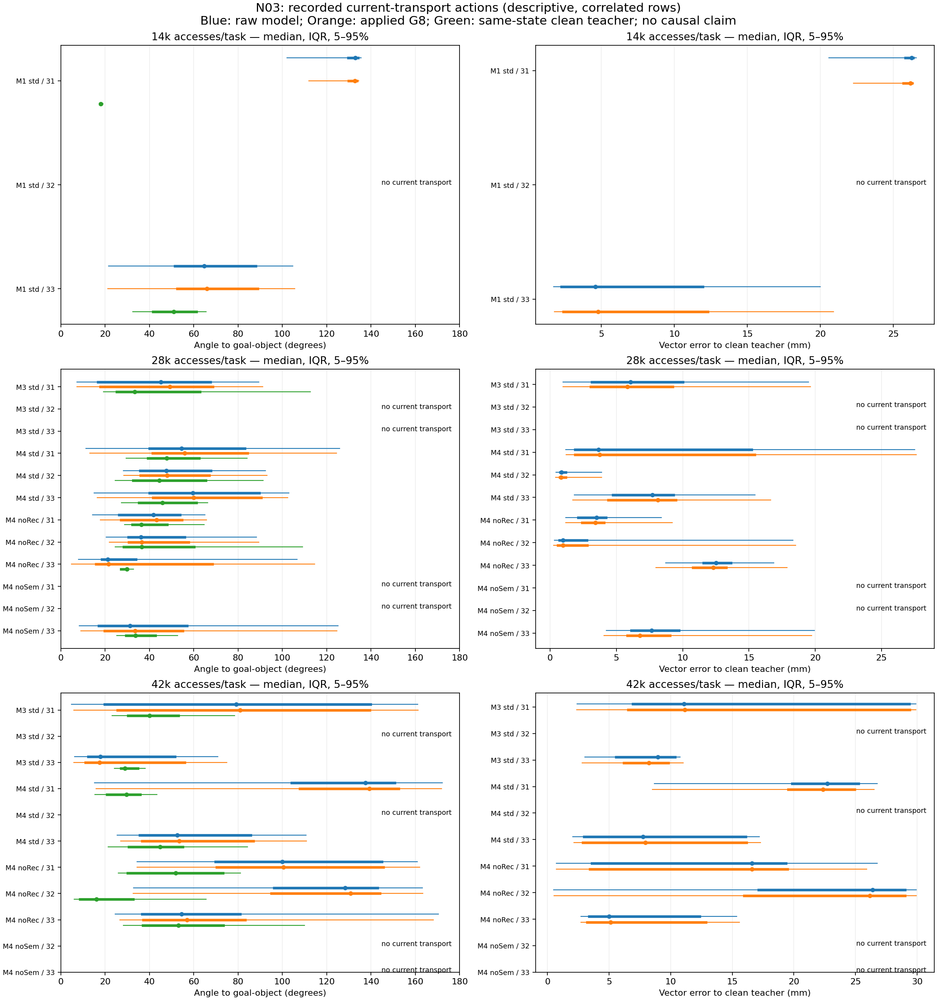
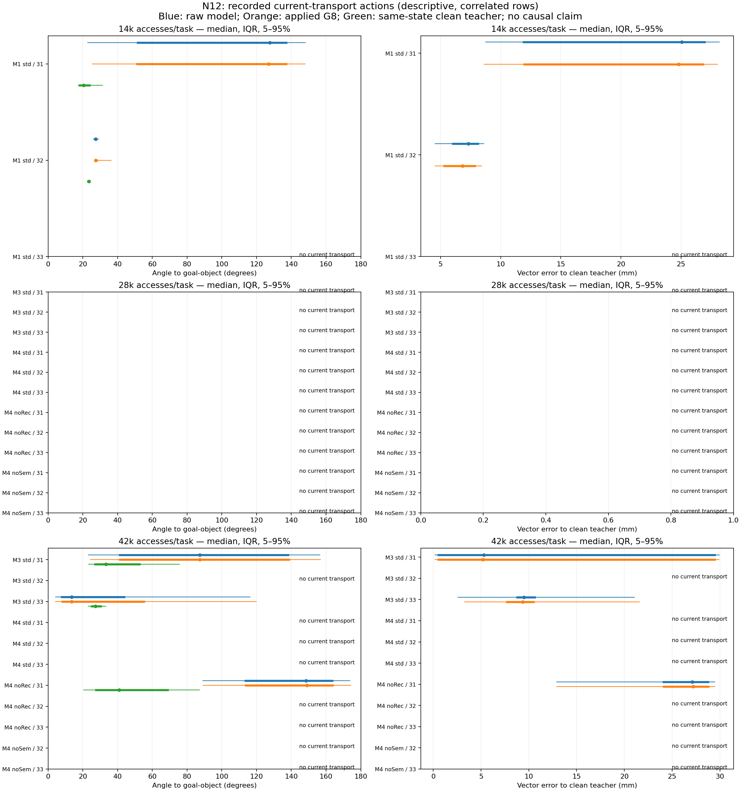

Three seeds, three budgets, five methods / variants.
CHEMOPD / FIXED DATA, UPDATED STUDENT
Learning the route
to the goal.
表示升级，复用已有标签。
A shared geometric representation and a larger student are being tested on N03 and N12. The original v1 runs remain available; the new fits use exactly their admitted data, label charges and fixed training recipe.
50 heldout cases per task / model / seed; unrun outcomes remain unknown.
v1 learner-state data are off-policy for v2.
Next decision: at least one v2 model must reach 10/50 N03 nominal successes before perturbation experiments continue. A fitted checkpoint alone does not satisfy this gate.
Snapshot: 2026-10-21 20:22 UTC. v1 42k evaluations closed at this snapshot: 18 / 30 task banks. No later-round effectiveness claim is made.
ONE COMMON CONTRACT
Geometry in; phase supervision only in training.
41 → 57 dimensions
TCP-frame object offset, goal-relative positions, relative rotation in 6D, and gripper aperture minus fixed asset width.
Every added feature is computed from the existing observation.
4 × 512 + LayerNorm
A 13-class phase head supplies auxiliary supervision from previously recorded physical evidence.
Phase labels are offline rule-derived proxies, not original logged expert phases.
Same bounded 8D actions
Same C3 controller, gripper hysteresis, pose smoothing, timing and heldout poses.
The phase head is not evaluated in the action path.
All models use 40,000 updates. Label budgets are 28k, 42k and 56k accesses per task, including failed and rejected calls. This v2 bundle changes geometry, network capacity and auxiliary supervision together; their individual effects are not isolated here.
The interrupted v1 ablation retains 5,200 / 5,392 paid calls. Its approved remaining-budget acquisition uses only the remaining 8,800 / 8,608 calls, leaving fewer usable labels while preserving the same 56k cost cap. Strict DART remains pending a decision about new perturbed-state labels.
MEASURED / RECORDED STATES
Inspecting transport actions.
52 closed data sets contain 728,000 active rows; 5,860 satisfy the reconstructed current-transport predicate. These are correlated learner-visited states, not heldout episodes or independent success trials.


A large 3D angle alone does not prove a failure mechanism: the expert may correctly lift or hover before moving toward a lower goal. Horizontal angles and same-state teacher contrasts are retained. Different checkpoint groups visited different states; they are not a paired causal comparison. Download all quantiles ↗
ALL PLANNED RUNS / NO SEED SELECTION
Training and evaluation ledger.
All three fixed seeds are reported. Each nominal point uses the same 50 cases per task; 4,500 planned executions reuse 100 task / source instances. Wilson intervals are reported per seed, without pooling scenes.
| Method | Variant | Labels/task | Seed | Fit state | Updates | N03 | N12 |
|---|---|---|---|---|---|---|---|
| M1 | standard | 28k | 20261031 | trained cpu checked | 40,000 | Not measured | Not measured |
| M1 | standard | 28k | 20261032 | trained cpu checked | 40,000 | Not measured | Not measured |
| M1 | standard | 28k | 20261033 | trained cpu checked | 40,000 | Not measured | Not measured |
| M3 | standard | 28k | 20261031 | training | 16,900 | Not measured | Not measured |
| M3 | standard | 28k | 20261032 | training | 16,900 | Not measured | Not measured |
| M3 | standard | 28k | 20261033 | training | 17,000 | Not measured | Not measured |
| M4 | standard | 28k | 20261031 | planned | 0 | Not measured | Not measured |
| M4 | standard | 28k | 20261032 | planned | 0 | Not measured | Not measured |
| M4 | standard | 28k | 20261033 | planned | 0 | Not measured | Not measured |
| M1 | standard | 42k | 20261031 | planned | 0 | Not measured | Not measured |
| M1 | standard | 42k | 20261032 | planned | 0 | Not measured | Not measured |
| M1 | standard | 42k | 20261033 | planned | 0 | Not measured | Not measured |
| M3 | standard | 42k | 20261031 | planned | 0 | Not measured | Not measured |
| M3 | standard | 42k | 20261032 | planned | 0 | Not measured | Not measured |
| M3 | standard | 42k | 20261033 | planned | 0 | Not measured | Not measured |
| M4 | standard | 42k | 20261031 | planned | 0 | Not measured | Not measured |
| M4 | standard | 42k | 20261032 | planned | 0 | Not measured | Not measured |
| M4 | standard | 42k | 20261033 | planned | 0 | Not measured | Not measured |
| M1 | standard | 56k | 20261031 | planned | 0 | Not measured | Not measured |
| M1 | standard | 56k | 20261032 | planned | 0 | Not measured | Not measured |
| M1 | standard | 56k | 20261033 | planned | 0 | Not measured | Not measured |
| M3 | standard | 56k | 20261031 | planned | 0 | Not measured | Not measured |
| M3 | standard | 56k | 20261032 | planned | 0 | Not measured | Not measured |
| M3 | standard | 56k | 20261033 | planned | 0 | Not measured | Not measured |
| M4 | standard | 56k | 20261031 | planned | 0 | Not measured | Not measured |
| M4 | standard | 56k | 20261032 | planned | 0 | Not measured | Not measured |
| M4 | standard | 56k | 20261033 | planned | 0 | Not measured | Not measured |
| M4 | without_semantic_filter | 28k | 20261031 | planned | 0 | Not measured | Not measured |
| M4 | without_semantic_filter | 28k | 20261032 | planned | 0 | Not measured | Not measured |
| M4 | without_semantic_filter | 28k | 20261033 | planned | 0 | Not measured | Not measured |
| M4 | without_recovery_weight | 28k | 20261031 | planned | 0 | Not measured | Not measured |
| M4 | without_recovery_weight | 28k | 20261032 | planned | 0 | Not measured | Not measured |
| M4 | without_recovery_weight | 28k | 20261033 | planned | 0 | Not measured | Not measured |
| M4 | without_semantic_filter | 42k | 20261031 | planned | 0 | Not measured | Not measured |
| M4 | without_semantic_filter | 42k | 20261032 | planned | 0 | Not measured | Not measured |
| M4 | without_semantic_filter | 42k | 20261033 | planned | 0 | Not measured | Not measured |
| M4 | without_recovery_weight | 42k | 20261031 | planned | 0 | Not measured | Not measured |
| M4 | without_recovery_weight | 42k | 20261032 | planned | 0 | Not measured | Not measured |
| M4 | without_recovery_weight | 42k | 20261033 | planned | 0 | Not measured | Not measured |
| M4 | without_semantic_filter | 56k | 20261031 | waiting budget repair | 0 | Not measured | Not measured |
| M4 | without_semantic_filter | 56k | 20261032 | planned | 0 | Not measured | Not measured |
| M4 | without_semantic_filter | 56k | 20261033 | planned | 0 | Not measured | Not measured |
| M4 | without_recovery_weight | 56k | 20261031 | planned | 0 | Not measured | Not measured |
| M4 | without_recovery_weight | 56k | 20261032 | planned | 0 | Not measured | Not measured |
| M4 | without_recovery_weight | 56k | 20261033 | planned | 0 | Not measured | Not measured |